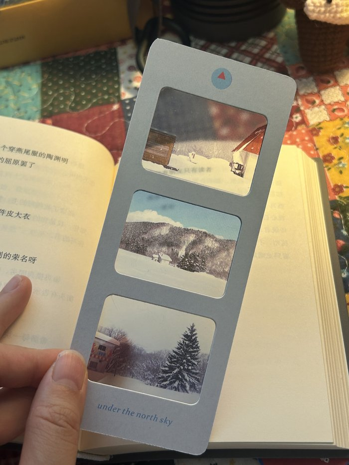
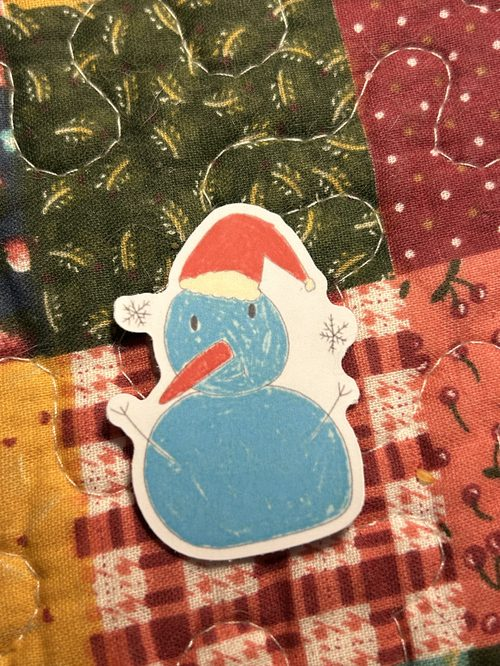
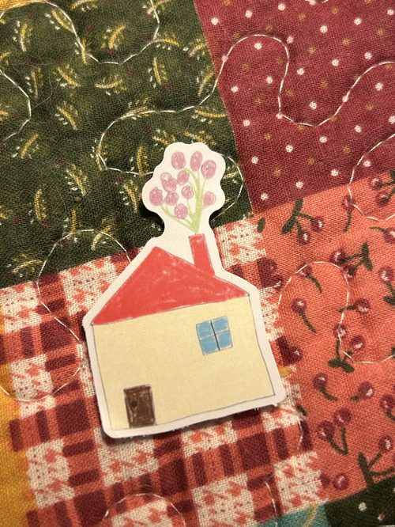
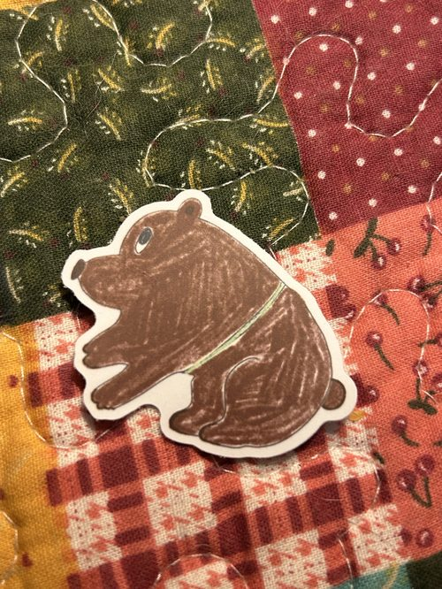
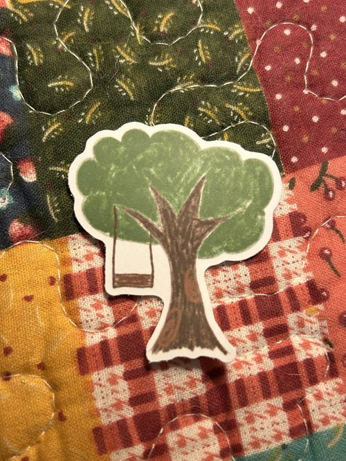
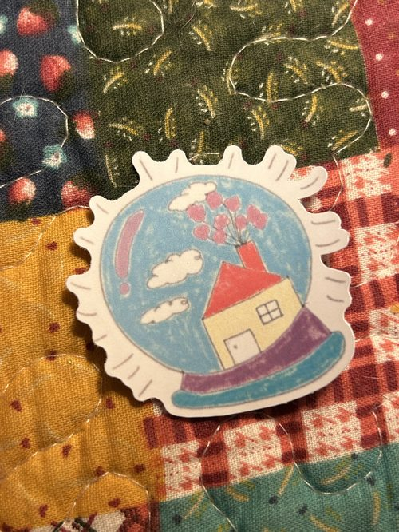

a note before you enter
for the parts of you that keep travelling
These are not souvenirs of one neat journey. They are small witnesses to leaving, returning, and learning how to keep becoming.
Six postcards from Yakumo, for the departures, returns, and becoming that make a life.
These are not souvenirs of one neat journey. They are small witnesses to leaving, returning, and learning how to keep becoming.
To Ithaca began in a small northern town, with a question: what if arriving is simply another way to begin? These cards hold the departures, returns, and becoming that we meet more than once.
A small piece of Yakumo to keep between the pages you are still living.

Photographed by Lynn in Yakumo, then made into a reversible film bookmark. One side says Under the North Sky; the other, Return to Yourself.
Kita-Sora sky-blue border · reversal-film inspired finish · original crystal-ball logo
The logo holds Yakumo like a tiny crystal ball. Its red triangle is the peak of the red-roofed house from one of the collection’s most-loved photographs.
Five small companions from the same world, made for letters, notebooks, luggage, and the little places that need a sign of life.





The full story lives in the letters — and now, some of it, you can hold in your hands.
visit the Ko-fi shop → ↩ back to shop